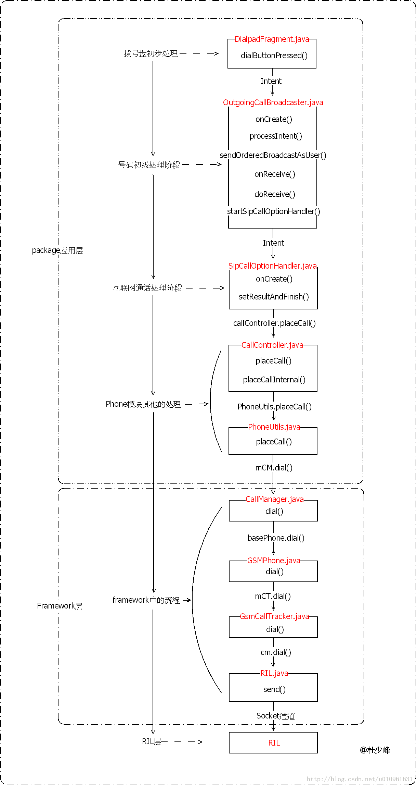

目录视图
目录视图 摘要视图
摘要视图 订阅
订阅版权声明：本文为博主原创文章，未经博主允许不得转载。
我们从按下拨号开始分析呼出电话的流程。此流程从拨号盘分析到RIL层。
一、应用层的流程
1.1、拨号盘初步处理
- @DialpadFragment.java
- public void dialButtonPressed() {
- //得到号码
- final String number = mDigits.getText().toString();
- //得到拨号的Intent
- final Intent intent = ContactsUtils.getCallIntent(number,
- (getActivity() instanceof DialtactsActivity ?
- ((DialtactsActivity)getActivity()).getCallOrigin() : null));
- startActivity(intent);
- mClearDigitsOnStop = true;
- getActivity().finish();
- }
- @ContactsUtils.java
- public static Intent getCallIntent(String number, String callOrigin) {
- 用号码构建一个类似tel:10086的Uri
- return getCallIntent(getCallUri(number), callOrigin);
- }
- public static Intent getCallIntent(Uri uri, String callOrigin) {
- final Intent intent = new Intent(Intent.ACTION_CALL_PRIVILEGED, uri);
- intent.setFlags(Intent.FLAG_ACTIVITY_NEW_TASK);
- if (callOrigin != null) {
- intent.putExtra(DialtactsActivity.EXTRA_CALL_ORIGIN, callOrigin);
- }
- return intent;
- }
1、Action为：ACTION_CALL_PRIVILEGED，(android.intent.action.CALL_PRIVILEGED)；
2、Flag为：FLAG_ACTIVITY_NEW_TASK；
3、号码Uri为：tel:10086
然后经过startActivity发送出去。那么是那个Activity接受的呢？
1.2、号码初级处理阶段
这个过程主要针对紧急呼叫处理（OutgoingCallBroadcaster.java）。
在Phone模块的AndroidManifest.xml文件中有如下描述：- <activity-alias android:name="PrivilegedOutgoingCallBroadcaster"
- android:targetActivity="OutgoingCallBroadcaster"
- android:screenOrientation="nosensor"
- android:permission="android.permission.CALL_PRIVILEGED">
- <intent-filter>
- <action android:name="android.intent.action.CALL_PRIVILEGED" />
- <category android:name="android.intent.category.DEFAULT" />
- <data android:scheme="tel" />
- </intent-filter>
- </activity-alias>
- @OutgoingCallBroadcaster.java
- protected void onCreate(Bundle icicle) {
- super.onCreate(icicle);
- setContentView(R.layout.outgoing_call_broadcaster);
- mWaitingSpinner = (ProgressBar) findViewById(R.id.spinner);
- Intent intent = getIntent();
- processIntent(intent);
- }
- private void processIntent(Intent intent) {
- final Configuration configuration = getResources().getConfiguration();
- String action = intent.getAction();
- String number = PhoneNumberUtils.getNumberFromIntent(intent, this);
- //得到当前的号码
- if (number != null) {
- if (!PhoneNumberUtils.isUriNumber(number)) {
- number = PhoneNumberUtils.convertKeypadLettersToDigits(number);
- number = PhoneNumberUtils.stripSeparators(number);
- }
- } else {
- }
- //判断是否是紧急拨号
- final boolean isExactEmergencyNumber =
- (number != null) && PhoneNumberUtils.isLocalEmergencyNumber(number, this);
- final boolean isPotentialEmergencyNumber =
- (number != null) && PhoneNumberUtils.isPotentialLocalEmergencyNumber(number, this);
- if (Intent.ACTION_CALL_PRIVILEGED.equals(action)) {
- if (isPotentialEmergencyNumber) {
- //紧急拨号的action
- action = Intent.ACTION_CALL_EMERGENCY;
- } else {
- //非紧急拨号的action
- action = Intent.ACTION_CALL;
- }
- //重新设置Action，当前不是紧急呼叫，因此Action改为ACTION_CALL
- intent.setAction(action);
- }
- if (Intent.ACTION_CALL.equals(action)) {
- if (isPotentialEmergencyNumber) {
- //判断不成立
- }
- //当前的callNow为false
- callNow = false;
- } else if (Intent.ACTION_CALL_EMERGENCY.equals(action)) {
- //紧急呼叫的处理
- } else {
- }
- Uri uri = intent.getData();
- String scheme = uri.getScheme();
- if (Constants.SCHEME_SIP.equals(scheme) || PhoneNumberUtils.isUriNumber(number)) {
- //互联网通话的处理
- }
- //重新构建Intent
- Intent broadcastIntent = new Intent(Intent.ACTION_NEW_OUTGOING_CALL);
- if (number != null) {
- broadcastIntent.putExtra(Intent.EXTRA_PHONE_NUMBER, number);
- }
- PhoneUtils.checkAndCopyPhoneProviderExtras(intent, broadcastIntent);
- broadcastIntent.putExtra(EXTRA_ALREADY_CALLED, callNow);
- broadcastIntent.putExtra(EXTRA_ORIGINAL_URI, uri.toString());
- broadcastIntent.addFlags(Intent.FLAG_RECEIVER_FOREGROUND);
- //添加一个2秒的定时器，2秒内Intent没有收到的话，就显示一个进度条
- mHandler.sendEmptyMessageDelayed(EVENT_OUTGOING_CALL_TIMEOUT,
- OUTGOING_CALL_TIMEOUT_THRESHOLD);
- //发送广播，而且指明了接收者是OutgoingCallReceiver
- sendOrderedBroadcastAsUser(broadcastIntent, UserHandle.OWNER,
- PERMISSION, new OutgoingCallReceiver(),
- null,
- Activity.RESULT_OK,
- number,
- null);
- }
Intent：ACTION_NEW_OUTGOING_CALL；
EXTRA_ALREADY_CALLED：false；
EXTRA_ORIGINAL_URI:号码的Uri；
发送目标：OutgoingCallReceiver；
这里所谓的目标OutgoingCallReceiver其实就是OutgoingCallBroadcaster.java中的内部类，我们直接来看他的接收地方：
- public void onReceive(Context context, Intent intent) {
- //去掉3妙的定时器
- mHandler.removeMessages(EVENT_OUTGOING_CALL_TIMEOUT);
- doReceive(context, intent);
- finish();
- }
- public void doReceive(Context context, Intent intent) {
- //这里的得到的是false
- alreadyCalled = intent.getBooleanExtra(OutgoingCallBroadcaster.EXTRA_ALREADY_CALLED, false);
- if (alreadyCalled) {
- return;
- }
- //得到号码
- number = getResultData();
- final PhoneGlobals app = PhoneGlobals.getInstance();
- //OTASP功能，CDMA制式支持
- if (TelephonyCapabilities.supportsOtasp(app.phone)) {
- }
- //得到号码的Uri
- originalUri = intent.getStringExtra( OutgoingCallBroadcaster.EXTRA_ORIGINAL_URI);
- Uri uri = Uri.parse(originalUri);
- //把字母转换为数字，比如：a-->2；d-->3；g-->4等
- number = PhoneNumberUtils.convertKeypadLettersToDigits(number);
- //把所有字符转换为数字
- number = PhoneNumberUtils.stripSeparators(number);
- //继续处理
- startSipCallOptionHandler(context, intent, uri, number);
- }
- private void startSipCallOptionHandler(Context context, Intent intent, Uri uri, String number) {
- //再次构建Intent
- Intent newIntent = new Intent(Intent.ACTION_CALL, uri);
- newIntent.putExtra(EXTRA_ACTUAL_NUMBER_TO_DIAL, number);
- //把原始的Intent数据拷贝过来
- //主要去解析EXTRA_GATEWAY_PROVIDER_PACKAGE和EXTRA_GATEWAY_URI，而这两项均为null
- PhoneUtils.checkAndCopyPhoneProviderExtras(intent, newIntent);
- //还有一个Intent
- Intent selectPhoneIntent = new Intent(ACTION_SIP_SELECT_PHONE, uri);
- //指明接受者是SipCallOptionHandler
- selectPhoneIntent.setClass(context, SipCallOptionHandler.class);
- //把上面的Intent放到EXTRA_NEW_CALL_INTENT中
- selectPhoneIntent.putExtra(EXTRA_NEW_CALL_INTENT, newIntent);
- //用新的task装载
- selectPhoneIntent.addFlags(Intent.FLAG_ACTIVITY_NEW_TASK);
- //发送，走起
- context.startActivity(selectPhoneIntent);
- }
Action ---> ACTION_SIP_SELECT_PHONE
EXTRA_NEW_CALL_INTENT--->拨号的Intent，而且这个Intent的Action为ACTION_CALL
EXTRA_ACTUAL_NUMBER_TO_DIAL ---> 为拨号的号码
1.3、互联网通话处理阶段（SipCallOptionHandler.java）
我们来看上面Intent的接受过程，在SipCallOptionHandler中：- @SipCallOptionHandler.java
- public void onCreate(Bundle savedInstanceState) {
- super.onCreate(savedInstanceState);
- //得到Intent
- Intent intent = getIntent();
- String action = intent.getAction();
- //外层的Intent
- if (!OutgoingCallBroadcaster.ACTION_SIP_SELECT_PHONE.equals(action)) {
- finish();
- return;
- }
- //得到拨号的Intent
- mIntent = (Intent) intent.getParcelableExtra(OutgoingCallBroadcaster.EXTRA_NEW_CALL_INTENT);
- if (mIntent == null) {
- finish();
- return;
- }
- //是否支持互联网通话
- boolean voipSupported = PhoneUtils.isVoipSupported();
- mSipProfileDb = new SipProfileDb(this);
- mSipSharedPreferences = new SipSharedPreferences(this);
- mCallOption = mSipSharedPreferences.getSipCallOption();
- Uri uri = mIntent.getData();
- String scheme = uri.getScheme();
- //得到通话的号码
- mNumber = PhoneNumberUtils.getNumberFromIntent(mIntent, this);
- //是否有网络
- boolean isInCellNetwork = PhoneGlobals.getInstance().phoneMgr.isRadioOn();
- //是否是tel：或者sip：的协议
- boolean isKnownCallScheme = Constants.SCHEME_TEL.equals(scheme)||Constants.SCHEME_SIP.equals(scheme);
- boolean isRegularCall = Constants.SCHEME_TEL.equals(scheme)
- && !PhoneNumberUtils.isUriNumber(mNumber);
- if (!isKnownCallScheme) {
- //异常处理，处理非法协议。
- setResultAndFinish();
- return;
- }
- if (!voipSupported) {
- if (!isRegularCall) {
- showDialog(DIALOG_NO_VOIP);
- } else {
- //当前不是IP通话，因此走这里
- setResultAndFinish();
- }
- return;
- }
- setResultAndFinish();
- }
- private void setResultAndFinish() {
- //放在主线程中操作
- runOnUiThread(new Runnable() {
- public void run() {
- if (mOutgoingSipProfile != null) {
- //互联网通话
- if (!isNetworkConnected()) {
- showDialog(DIALOG_NO_INTERNET_ERROR);
- return;
- }
- createSipPhoneIfNeeded(mOutgoingSipProfile);
- mIntent.putExtra(OutgoingCallBroadcaster.EXTRA_SIP_PHONE_URI,
- mOutgoingSipProfile.getUriString());
- if (mMakePrimary) {
- mSipSharedPreferences.setPrimaryAccount(
- mOutgoingSipProfile.getUriString());
- }
- }
- if (mUseSipPhone && mOutgoingSipProfile == null) {
- showDialog(DIALOG_START_SIP_SETTINGS);
- return;
- } else {
- //正常拨号
- PhoneGlobals.getInstance().callController.placeCall(mIntent);
- }
- finish();
- }
- });
- }
上面可以看出，在SipCallOptionHandler.java文件中主要针对互联网通话进行处理，注意，这里的互联网通话和IP拨号不同。
1.4、Phone模块其他的处理
主要作用是把intent解析为号码，同时得到拨号必须的Phone、CM、context等重要信息。- @CallController.java
- public void placeCall(Intent intent)
- {
- //拨打
- CallStatusCode status = placeCallInternal(intent);
- //显示InCallScreen
- mApp.displayCallScreen(!intent.getBooleanExtra(Constants.EXTRA_IS_VIDEO_CALL, false), forPlaceCall);
- }
- private CallStatusCode placeCallInternal(Intent intent) {
- //得到号码
- number = PhoneUtils.getInitialNumber(intent);
- //得到Phone对象
- phone = PhoneUtils.pickPhoneBasedOnNumber(mCM, scheme, number, sipPhoneUri);
- //检查当前状态
- okToCallStatus = checkIfOkToInitiateOutgoingCall(phone.getServiceState().getState());
- //得到联系人的数据
- Uri contactUri = intent.getData();
- //拨号
- int callStatus = PhoneUtils.placeCall(mApp,
- phone,
- number,
- contactUri,
- (isEmergencyNumber || isEmergencyIntent),
- inCallUiState.providerGatewayUri);
- }
- @PhoneUtils.java
- public static int placeCall(Context context, Phone phone,
- String number, Uri contactRef, boolean isEmergencyCall,
- Uri gatewayUri) {
- //得到app
- final PhoneGlobals app = PhoneGlobals.getInstance();
- //号码
- numberToDial = number;
- //拨号
- connection = app.mCM.dial(phone, numberToDial);
- //设置音频模式
- setAudioMode();
- return status;
- }
- mCM = CallManager.getInstance();
说明dial是通过CallManager去执行dial的：
二、framework中的流程
- @CallManager.java
- public Connection dial(Phone phone, String dialString) throws CallStateException {
- //得到basePhone
- Phone basePhone = getPhoneBase(phone);
- //根据当前的通话状态决定是否可以继续拨号
- if (!canDial(phone)) {
- throw new CallStateException("cannot dial in current state");
- }
- if ( hasActiveFgCall() ) {
- //已经有电话存在
- }
- //拨号
- result = basePhone.dial(dialString);
- return result;
- }
代码走到这里，就简化为调用一个Phone对象的dial方法了，此时要想继续往下分析，就必须知道这个Phone对象的来历。下面我们要做两件事：
1、查出Phone对象到底来自于哪里。
2、我们如何通过PhoneUtils.pickPhoneBasedOnNumber()的方式得到了这个Phone对象。
2.1、Phone的来历
Phone在通话中扮演着极其重要的操作，我们来看一下Phone是怎样产生的。我们知道，Phone模块进程第一个启动的类就是PhoneGlobals，他是在手机开机的过程中启动的。那么我们看一下他的初始化过程：
- @PhoneGlobals.java
- public void onCreate() {
- //创建Phone对象
- PhoneFactory.makeDefaultPhones(this);
- //得到创建的Phone对象
- phone = PhoneFactory.getDefaultPhone();
- //初始化CallManager并把Phone对象注册给CallManager
- mCM = CallManager.getInstance();
- mCM.registerPhone(phone);
- //初始化NotificationMgr
- notificationMgr = NotificationMgr.init(this);
- phoneMgr = PhoneInterfaceManager.init(this, phone);
- //开启SIP服务
- mHandler.sendEmptyMessage(EVENT_START_SIP_SERVICE);
- //铃声初始化
- ringer = Ringer.init(this);
- //得到电源管理服务
- mPowerManager = (PowerManager) getSystemService(Context.POWER_SERVICE);
- //距离传感器
- if (proximitySensorModeEnabled()) {
- mAccelerometerListener = new AccelerometerListener(this, this);
- }
- //按键管理
- mKeyguardManager = (KeyguardManager) getSystemService(Context.KEYGUARD_SERVICE);
- //电源管理
- mPowerManagerService = IPowerManager.Stub.asInterface(ServiceManager.getService("power"));
- //又是各种初始化
- callController = CallController.init(this);
- inCallUiState = InCallUiState.init(this);
- callerInfoCache = CallerInfoCache.init(this);
- notifier = CallNotifier.init(this, phone, ringer, new CallLogAsync());
- //SIM卡状态监听
- IccCard sim = phone.getIccCard();
- if (sim != null) {
- sim.registerForNetworkLocked(mHandler, EVENT_SIM_NETWORK_LOCKED, null);
- }
- mCM.registerForMmiComplete(mHandler, MMI_COMPLETE, null);
- PhoneUtils.initializeConnectionHandler(mCM);
- mTtyEnabled = getResources().getBoolean(R.bool.tty_enabled);
- //注册一个Filter
- IntentFilter intentFilter = new IntentFilter(Intent.ACTION_AIRPLANE_MODE_CHANGED);
- intentFilter.addAction(BluetoothHeadset.ACTION_CONNECTION_STATE_CHANGED);
- intentFilter.addAction(BluetoothHeadset.ACTION_AUDIO_STATE_CHANGED);
- intentFilter.addAction(TelephonyIntents.ACTION_ANY_DATA_CONNECTION_STATE_CHANGED);
- intentFilter.addAction(Intent.ACTION_HEADSET_PLUG);
- intentFilter.addAction(Intent.ACTION_DOCK_EVENT);
- intentFilter.addAction(TelephonyIntents.ACTION_SIM_STATE_CHANGED);
- intentFilter.addAction(TelephonyIntents.ACTION_RADIO_TECHNOLOGY_CHANGED);
- intentFilter.addAction(TelephonyIntents.ACTION_SERVICE_STATE_CHANGED);
- intentFilter.addAction(TelephonyIntents.ACTION_EMERGENCY_CALLBACK_MODE_CHANGED);
- intentFilter.addAction(AudioManager.RINGER_MODE_CHANGED_ACTION);
- registerReceiver(mReceiver, intentFilter);
- //注册Filter检测媒体按键的事件
- IntentFilter mediaButtonIntentFilter = new IntentFilter(Intent.ACTION_MEDIA_BUTTON);
- mediaButtonIntentFilter.setPriority(1);
- registerReceiver(mMediaButtonReceiver, mediaButtonIntentFilter);
- //注册Filter检测音频服务
- AudioManager am = (AudioManager) getSystemService(Context.AUDIO_SERVICE);
- am.registerMediaButtonEventReceiverForCalls(new ComponentName(this.getPackageName(),
- MediaButtonBroadcastReceiver.class.getName()));
- PhoneUtils.setAudioMode(mCM);
- }
- @PhoneFactory.java
- public static void makeDefaultPhones(Context context) {
- makeDefaultPhone(context);
- }
- public static void makeDefaultPhone(Context context) {
- //打开telephony的Socket
- new LocalServerSocket("com.android.internal.telephony");
- //Phone的通知管理
- sPhoneNotifier = new DefaultPhoneNotifier();
- //得到RILJ
- sCommandsInterface = new RIL(context, networkMode, cdmaSubscription);
- //得到当前的网络类型
- int phoneType = TelephonyManager.getPhoneType(networkMode);
- //根据当前的网络类型创建响应的PhoneProxy
- if (phoneType == PhoneConstants.PHONE_TYPE_GSM) {
- //用GSMPhone创建PhoneProxy
- sProxyPhone = new PhoneProxy(new GSMPhone(context,sCommandsInterface, sPhoneNotifier));
- } else if (phoneType == PhoneConstants.PHONE_TYPE_CDMA) {
- switch (TelephonyManager.getLteOnCdmaModeStatic()) {
- case PhoneConstants.LTE_ON_CDMA_TRUE:
- //用CDMALTEPhone创建PhoneProxy
- sProxyPhone = new PhoneProxy(new CDMALTEPhone(context,sCommandsInterface, sPhoneNotifier));
- break;
- case PhoneConstants.LTE_ON_CDMA_FALSE:
- default:
- //用CDMAPhone创建PhoneProxy
- sProxyPhone = new PhoneProxy(new CDMAPhone(context,sCommandsInterface, sPhoneNotifier));
- break;
- }
- }
- }
上面看到，我们创建的Phone对象其实只是一个Phone的代理（PhoneProxy）而已，而创建这个代理对象需要分两步：
1、首先根据当前的网络类型创建不同的PhoneBase对象，也就是GSMPhone/CDMALTEPhone/CDMAPhone等；
2、然后再用这个PhoneBase对象去构建PhoneProxy对象。
那么，PhoneProxy和GSMPhone又是什么东西呢？我们来看看他们的继承关系：先来看一下PhoneProxy：
- public class PhoneProxy extends Handler implements Phone
- public class GSMPhone extends PhoneBase
- public abstract class PhoneBase extends Handler implements Phone
我们知道，对于一个手机来说，无论采用哪种网络制式，他所具备的基本功能是相同的，比如都需要提供打电话、发短信、查询通话状态、读取SIM卡联系人等操作，因此对所有制式的phone都抽象为一个统一的接口：Phone。
但另一方面，不同的网络制式在具体的每项功能实现上，又有很大的不同。因此，需要根据不同的网络制式去实现不同的basePhone，但是都需要完成Phone接口所定义的方法。
而在basePhone之上，再次用PhoneProxy把不同的basePhone封装，这样一来，从上层来看，就屏蔽了不同的basePhone，所有的Phone都是统一的PhoneProxy。
在这里我们只分析GSMPhone，至于CDMAPhone和CDMALTEPhone的基本原理都是类似的。而在分析GSMPhone的创建过程之前，先来看一下创建GSMPhone的必要条件：
- sProxyPhone = new PhoneProxy(new GSMPhone(context,sCommandsInterface, sPhoneNotifier));
- sPhoneNotifier = new DefaultPhoneNotifier();
- sCommandsInterface = new RIL(context, networkMode, cdmaSubscription);
而sCommandsInterface就是RIL对象。这是framework层与RILC层沟通的渠道，所有上层与RIL层的沟通都需要通过RIL对象装换为相应的命令，最终在RIL.java中通过Socket通道发送给RIL层。
在创建相应的XXXPhone的时候把上面两个变量传递下去：
- @GSMPhone.java
- public GSMPhone (Context context, CommandsInterface ci, PhoneNotifier notifier) {
- this(context,ci,notifier, false);
- }
- public GSMPhone (Context context, CommandsInterface ci, PhoneNotifier notifier, boolean unitTestMode) {
- //把参数传递给父类，也就是PhoneBase类
- super(notifier, context, ci, unitTestMode);
- //mCM是在父类（PhoneBase）中初始化的
- mCM.setPhoneType(PhoneConstants.PHONE_TYPE_GSM);
- //各种初始化
- mCT = new GsmCallTracker(this);
- mSST = new GsmServiceStateTracker (this);
- mSMS = new GsmSMSDispatcher(this, mSmsStorageMonitor, mSmsUsageMonitor);
- mDataConnectionTracker = new GsmDataConnectionTracker (this);
- mSimPhoneBookIntManager = new SimPhoneBookInterfaceManager(this);
- mSimSmsIntManager = new SimSmsInterfaceManager(this, mSMS);
- mSubInfo = new PhoneSubInfo(this);
- //对mCM进行各种注册
- mCM.registerForAvailable(this, EVENT_RADIO_AVAILABLE, null);
- mCM.registerForOffOrNotAvailable(this, EVENT_RADIO_OFF_OR_NOT_AVAILABLE, null);
- mCM.registerForOn(this, EVENT_RADIO_ON, null);
- mCM.setOnUSSD(this, EVENT_USSD, null);
- mCM.setOnSuppServiceNotification(this, EVENT_SSN, null);
- mSST.registerForNetworkAttached(this, EVENT_REGISTERED_TO_NETWORK, null);
- //设置系统属性，GSMPhone被激活
- SystemProperties.set(TelephonyProperties.CURRENT_ACTIVE_PHONE,
- new Integer(PhoneConstants.PHONE_TYPE_GSM).toString());
- }
然后再来看PhoneProxy对象的初始化过程：
- @PhoneProxy.java
- public PhoneProxy(PhoneBase phone) {
- mActivePhone = phone;
- mResetModemOnRadioTechnologyChange = SystemProperties.getBoolean(
- TelephonyProperties.PROPERTY_RESET_ON_RADIO_TECH_CHANGE, false);
- mIccSmsInterfaceManagerProxy = new IccSmsInterfaceManagerProxy(
- phone.getIccSmsInterfaceManager());
- mIccPhoneBookInterfaceManagerProxy = new IccPhoneBookInterfaceManagerProxy(
- phone.getIccPhoneBookInterfaceManager());
- mPhoneSubInfoProxy = new PhoneSubInfoProxy(phone.getPhoneSubInfo());
- mCommandsInterface = ((PhoneBase)mActivePhone).mCM;
- mCommandsInterface.registerForRilConnected(this, EVENT_RIL_CONNECTED, null);
- mCommandsInterface.registerForOn(this, EVENT_RADIO_ON, null);
- mCommandsInterface.registerForVoiceRadioTechChanged(
- this, EVENT_VOICE_RADIO_TECH_CHANGED, null);
- mIccCardProxy = new IccCardProxy(phone.getContext(), mCommandsInterface);
- if (phone.getPhoneType() == PhoneConstants.PHONE_TYPE_GSM) {
- // For the purpose of IccCardProxy we only care about the technology family
- mIccCardProxy.setVoiceRadioTech(ServiceState.RIL_RADIO_TECHNOLOGY_UMTS);
- } else if (phone.getPhoneType() == PhoneConstants.PHONE_TYPE_CDMA) {
- mIccCardProxy.setVoiceRadioTech(ServiceState.RIL_RADIO_TECHNOLOGY_1xRTT);
- }
- }
经过上面的步骤，不仅创建了phone的对象，而且又注册了各种附加的代理对象，上层可以通过对不同的代理对象的调用去完成不同的功能。
至此，Phone的来历我们就摸清了，用一句话来表述就是，Phone对象就是GSMPhone对象（GSM制式下）。
2.2、我们是如何通过pickPhoneBasedOnNumber()的方式得到的Phone对象的
要回答这个问题，我们就要看当初创建Phone对象之后还做了哪些动作。在分析Phone对象来历时，我们知道Phone对象是在PhoneGlobals中被创建的：
- @PhoneGlobals.java
- public void onCreate() {
- //创建Phone对象并获取
- PhoneFactory.makeDefaultPhones(this);
- phone = PhoneFactory.getDefaultPhone();
- //初始化CallManager
- mCM = CallManager.getInstance();
- //把Phone注册给CallManager
- mCM.registerPhone(phone);
- }
- @CallManager.java
- public boolean registerPhone(Phone phone) {
- Phone basePhone = getPhoneBase(phone);
- if (basePhone != null && !mPhones.contains(basePhone)) {
- if (mPhones.isEmpty()) {
- //第一次注册时，mPhones列表当然为空
- mDefaultPhone = basePhone;
- }
- mPhones.add(basePhone);
- }
- }
- public Phone getDefaultPhone() {
- return mDefaultPhone;
- }
- phone = PhoneUtils.pickPhoneBasedOnNumber(mCM, scheme, number, sipPhoneUri);
- @PhoneUtils.java
- public static Phone pickPhoneBasedOnNumber(CallManager cm, String scheme, String number, String primarySipUri) {
- return cm.getDefaultPhone();
- }
由此，我们不仅在3.1节中分析了Phone对象的创建过程，而且也在当前节中分析了得到Phone对象的方法。
2.3、继续拨号之旅
在上面的两个小节中主要讲解了Phone对象的来历，简单的说，Phone对象就是GSMPhone对象（对GSM网络来说）。而在前面追踪拨号流程时，我们跟踪到了CallManager.java中的basePhone.dial(dialString)，因此，这里的dial就到了GSMPhone中：- @GSMPhone.java
- public Connection dial(String dialString) throws CallStateException {
- return dial(dialString, null);
- }
- public Connection dial (String dialString, UUSInfo uusInfo) throws CallStateException {
- return mCT.dial(newDialString, uusInfo);
- }
- mCT = new GsmCallTracker(this);
- @GsmCallTracker.java
- Connection dial(String dialString, UUSInfo uusInfo) throws CallStateException {
- return dial(dialString, CommandsInterface.CLIR_DEFAULT, uusInfo);
- }
- Connection dial (String dialString, int clirMode, UUSInfo uusInfo) throws CallStateException {
- //构建一个GSM连接
- pendingMO = new GsmConnection(phone.getContext(), checkForTestEmergencyNumber(dialString), this, foregroundCall);
- //拨号
- cm.dial(pendingMO.address, clirMode, uusInfo, obtainCompleteMessage());
- //更新Phone状态
- updatePhoneState();
- //发送状态更新通知
- phone.notifyPreciseCallStateChanged();
- }
- GsmCallTracker (GSMPhone phone) {
- this.phone = phone;
- cm = phone.mCM;
- }
- @PhoneBase.java
- protected PhoneBase(PhoneNotifier notifier, Context context, CommandsInterface ci, boolean unitTestMode) {
- this.mNotifier = notifier;
- this.mContext = context;
- mCM = ci;
- }
- @RIL.java
- public void dial(String address, int clirMode, UUSInfo uusInfo, Message result) {
- //构建RIL层的请求码：RIL_REQUEST_DIAL
- RILRequest rr = RILRequest.obtain(RIL_REQUEST_DIAL, result);
- rr.mp.writeString(address);
- rr.mp.writeInt(clirMode);
- if (uusInfo == null) {
- rr.mp.writeInt(0); // UUS information is absent
- } else {
- rr.mp.writeInt(1); // UUS information is present
- rr.mp.writeInt(uusInfo.getType());
- rr.mp.writeInt(uusInfo.getDcs());
- rr.mp.writeByteArray(uusInfo.getUserData());
- }
- //发送
- send(rr);
- }
- private void send(RILRequest rr) {
- Message msg;
- if (mSocket == null) {
- rr.onError(RADIO_NOT_AVAILABLE, null);
- rr.release();
- return;
- }
- msg = mSender.obtainMessage(EVENT_SEND, rr);
- acquireWakeLock();
- msg.sendToTarget();
- }
- @Override
- public void handleMessage(Message msg) {
- //得到要发送的数据
- RILRequest rr = (RILRequest)(msg.obj);
- switch (msg.what) {
- case EVENT_SEND:
- //得到Socket
- LocalSocket s;
- s = mSocket;
- byte[] data;
- data = rr.mp.marshall();
- rr.mp.recycle();
- rr.mp = null;
- dataLength[0] = dataLength[1] = 0;
- dataLength[2] = (byte)((data.length >> 8) & 0xff);
- dataLength[3] = (byte)((data.length) & 0xff);
- //把数据发送给RIL层
- s.getOutputStream().write(dataLength);
- s.getOutputStream().write(data);
- break;
- case EVENT_WAKE_LOCK_TIMEOUT:
- }
- }
经过以上的过程，就把拨号的请求发送到了RIL层。
三、总体流程图
现在我们贴出整个拨出号码的流程图：

- 顶
- 2
- 踩
- 0
我的同类文章
- •高通平台ModemBindingPolicyHandler和ModemBindingPolicyHandler作用（原）2016-02-19阅读67•Android运营商名称显示之SPN的读取（原）2016-02-17阅读157•Android运营商名称显示（原）2016-02-17阅读122•Android短信发送流程之多收件人发送（原）2015-12-12阅读164•Android短信发送流程之普通短信发送（原）2015-12-12阅读222
- •Android运营商名称显示之PLMN与SPN显示规则（原）2016-02-17阅读150•Android运营商名称显示之PLMN的读取（原）2016-02-17阅读148•Qualcomm平台qcril初始化及消息处理流程（原）2016-01-30阅读255•Android短信发送流程之长短信发送（原）2015-12-12阅读167•数据业务建立流程之DcTracker创建过程（原）2015-11-02阅读693
- 猜你在找
- 6楼 dushuangquan1989 2015-11-18 16:16发表 [回复]

- 堙霜
- 1楼 MikesClockNeverStop 2014-04-25 13:42发表 [回复]

- 很好，讲解的非常详细。感谢楼主

核心技术类目
- 个人资料

工程师阿杜
- 访问：116552次积分：1754等级：
 排名：第14370名
排名：第14370名
- 原创：55篇转载：0篇译文：0篇评论：51条
- 访问：116552次积分：1754等级：
- 文章分类
- 阅读排行
- Android自动化测试（UiAutomator）简要介绍（原）(15441)Framework中的连接管理机制（原）(7852)两种AIDL用法分析（原）(6388)应用层的AIDL用法（原）(6067)Android呼出电话流程（原）(5657)Cortex-AX系列性能对比（原）(5379)AsyncChannel的使用和原理（原）(4996)Android拨号搜索机制源码分析（原）(4742)Wifi服务框架介绍（原）(4214)Binder源码分析之Native层（原）(3960)
- 评论排行
- 推荐文章
- 最新评论
- Wifi服务框架介绍（原）Telephony之TelephonyManager（原）Binder源码分析之驱动层（原）网络连接评分机制之再谈WIFI与数据切换过程（原）数据业务建立流程之常规APN参数的创建（原）网络连接评分机制之再谈WIFI与数据切换过程（原）网络连接评分机制之再谈WIFI与数据切换过程（原）网络连接评分机制之再谈WIFI与数据切换过程（原）网络连接评分机制之再谈WIFI与数据切换过程（原）Binder源码分析之Native层（原）
- Aaron_hejiajie: 写的很好，这次看懂了，之前找的网上的资料都是android 4.0以前的，当是wifi框架的实现方式...
- joyment2010: phone中好文章没人顶，条理很清晰。
- liuist: 假如有多个Client A、B、C同时与Service进行IPC时，Binder驱动如何保证Clie...
- 一曲独奏倾城颂: 非常感谢！
- lcr006: thanks for share
- 工程师阿杜: @u014047259:wifi打开并链接上之后，对数据的影响只有一个：是否需要断开数据网络。如果数...
- 工程师阿杜: @u014047259:即使WIFI的分值低于数据网络，但是WIFI依然是作为数据通道，只不过，此时...
- 一曲独奏倾城颂: @u014047259:我的意思是说，有一种wifi，连接wifi不需要身份验证，可是要上外网，需要...
- 一曲独奏倾城颂: 感谢分享，有一个疑问。更新当前WIFI的NetworkAgentInfo为CONNECTED状态，并...
- hnfly_2010: 还没看完，但是真的不错···